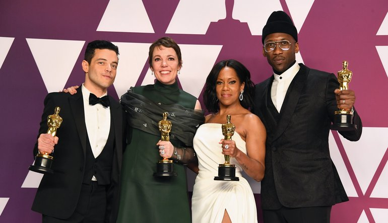

Chris Nolan Explains Why He Spoke Out Against Warner Bros 2021 Steaming Plans
Christopher Nolan explains why he spoke out against Warner Bros.' HBO Max release plan, saying the studio failed to collaborate with filmmakers.
Christopher Nolan explains why he spoke out against Warner Bros.' decision to release all of their 2021 films on HBO Max the same day as their theatrical releases. The studio sent shockwaves through the film industry in early December when they announced their 2021 streaming plan. Starting the day of their U.S. theater releases, the movies will hit HBO Max for one month before continuing in U.S. and international theaters. HBO Max subscribers will not be charged an additional fee for the films, including major releases such as Dune, The Suicide Squad, Godzilla vs. Kong, and The Matrix 4. The landmark decision unsurprisingly sparked outrage from the industry, especially as those impacted by the move received no advance notice prior to the announcement. Studios and filmmakers have since spoken out against it, including Tenet director Christopher Nolan.
Nolan, who has had a nearly two-decade-long relationship with Warner Bros., has been quite vocal about his opposition to the studio's decision. Warner Bros., who backed the director's major blockbusters, like The Dark Knight trilogy, Inception, and Interstellar, was bashed by Nolan for "dismantling" the industry and not making wise economic choices. He also went on to call HBO Max "the worst streaming service." Nolan received backlash for his remarks, with moviegoers criticizing Nolan for seemingly ignoring the ongoing pandemic only to be concerned with the lack of a theatrical experience. Now Nolan is defending his criticisms against the studio.
In an interview with The Washington Post, Nolan explained why he is against Warner Bros.' streaming release plan, saying they failed to collaborate with studios and filmmakers on their decision. He also questioned why the studio would prematurely make decisions on film releases for the rest of the 2021 year. Read Nolan's full comment below:
"The studio needed to collaborate with the filmmakers on what was going to happen. They didn’t speak to the filmmakers, they didn’t speak to the theater chains. They didn’t speak to the production partners on the films. That was the reason I was speaking up. As far as the specific strategy of what you would be doing over the entirety of next year, I don’t know why anyone would be making predictions through to December of 2021 on what they should or shouldn’t be doing with the business. That seems a long way out in a fast changing, dynamic situation."
Nolan and other filmmakers' reactions to Warner Bros.' streaming plan is understandable, as the decision has hurt the studios and directors who were not given any warning. While Wonder Woman: 1984 star Gal Gadot has received a $10 million payout as a result of the move and Warner Bros. is working out a plan to compensate other lead actors of their 2021 films, the plan has really only benefited moviegoers who are eager to see the films. However, despite Nolan's thoughts about Warner Bros. jumping to decisions about the rest of 2021, doctors have said that it could be over a year after the COVID vaccine comes out before theaters are safe again.
From the start of the pandemic, Nolan has been a staunch supporter of films continuing with theatrical releases. He fought for Warner Bros. to keep Tenet's theatrical release in September, which the studio hoped would bring audiences back to theaters. However, Warner Bros. consequently took a hit as the movie did not do nearly as well as hoped. Studios took the hint from Tenet's underperformance and delayed their films for another year or sent them straight to streaming. Many believe Warner Bros.' release plan was due to anticipation of an unsuccessful performance for 2021 films, so to have a simultaneous digital release would allow them to avoid a similar experience as Tenet.
OSCAR WINNERS 2019
The 2019 Oscar winners are here! It was a night of memorable moments and fabulous firsts as Green Book took home the Oscar for Best Picture. Regina King, Mahershala Ali, Rami Malek and Olivia Colman were tops in the acting categories and Spike Lee brought home Oscar for the very first time for Adapted Screenplay as a co-writer of BlacKkKlansman. Bohemian Rhapsody scored four Oscars while Black Panther and Roma won three each with Alfonso Cuarón adding another Directing Oscar to his collection. Spider-Man: Into the Spider-Verse won in the Animated Feature Film category and Lady Gaga gave a memorable performance of "Shallow" from A Star Is Born with Bradley Cooper before giving a memorable speech for winning for Original Song.

Performance by an actor in a leading role nominees:
- Christian Bale in VICE
- Bradley Cooper in A STAR IS BORN
- Willem Dafoe in AT ETERNITY'S GATE
- Rami Malek in BOHEMIAN RHAPSODY - WINNER!!
- Viggo Mortensen in GREEN BOOK
Performance by an actor in a supporting role nominees:
- Mahershala Ali in GREEN BOOK - WINNER!!
- Adam Driver in BLACKkKLANSMAN
- Sam Elliott in A STAR IS BORN
- Richard E. Grant in CAN YOU EVER FORGIVE ME?
- Sam Rockwell in VICE
Performance by an actress in a leading role nominees:
- Yalitza Aparicio in ROMA
- Glenn Close in THE WIFE
- Olivia Colman in THE FAVOURITE - WINNER!!
- Lady Gaga in A STAR IS BORN
- Melissa McCarthy in CAN YOU EVER FORGIVE ME?
Performance by an actress in a supporting role nominees:
- Amy Adams in VICE
- Marina de Tavira in ROMA
- Regina King in IF BEALE STREET COULD TALK - WINNER!!
- Emma Stone in THE FAVOURITE
- Rachel Weisz in THE FAVOURITE
Best animated feature film of the year winner:
- SPIDER-MAN: INTO THE SPIDER-VERSE - WINNER!!
Bob Persichetti, Peter Ramsey, Rodney Rothman, Phil Lord and Christopher Miller
Best documentary feature winner:
- FREE SOLO - WINNER!!
Elizabeth Chai Vasarhelyi, Jimmy Chin, Evan Hayes and Shannon Dill